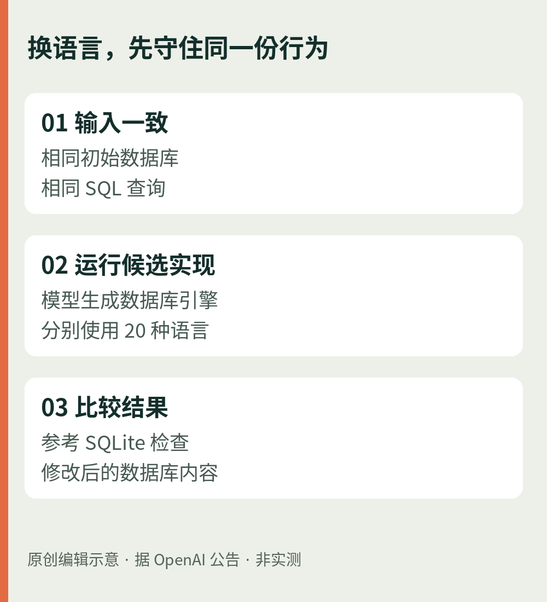
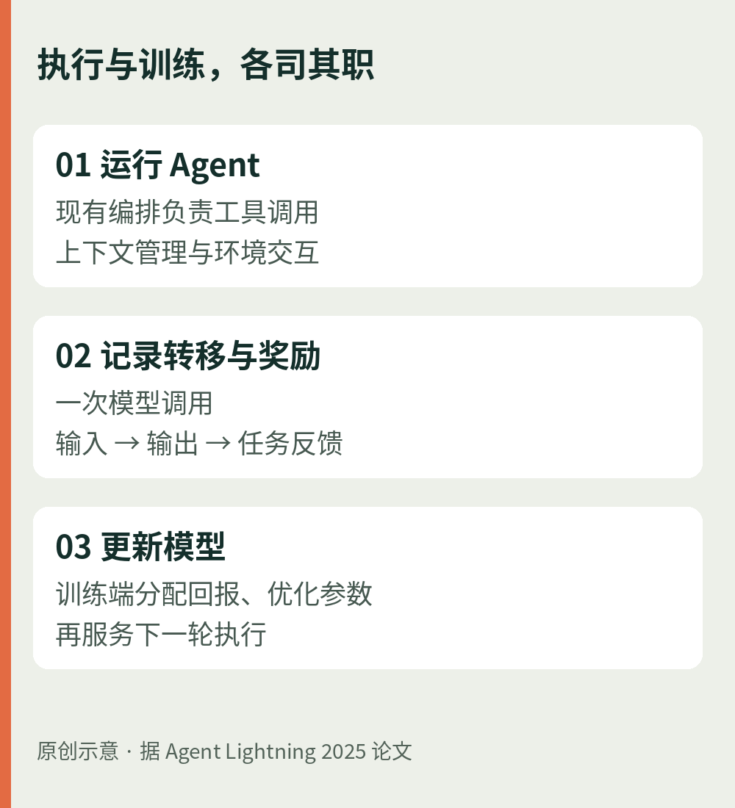

01 / AI · 软件架构
代码换了，行为不能悄悄变
低资源语言的进步，值得用更细的尺子读。

原创图解：MultiLangBench用共同输入与参考SQLite检查结果；据OpenAI公告绘制，不是实测结果。厂商报告。OpenAI在10月19日介绍两项自建评测。MultiLangBench要求模型用20种编程语言从零构建兼容SQLite的数据库引擎：给定初始数据库和SQL，再用参考SQLite检查输出数据库。GPT‑6 Astra在最高推理设置下的平均测试通过率为87.4%，对照GPT‑5.6 Sol为26.8%。这是测试项通过比例的跨语言平均，不能读成“87.4%的完整项目交付成功”。
另一项COBOL迁移评测要求转成C++、Java、Kotlin、Python或Rust；只有隐藏测试中的可观察输出逐字节一致，任务才算成功。GPT‑6.1 Sol在低推理设置下为86.6%，更高推理设置为97.9%。两个评测的分母不同，数字不宜横向排名。
编辑分析。迁移最危险的差别可能只是小数处理：原程序截掉多余位，新程序却四舍五入，代码都能运行，账目已经变了。可以先为金额精度、空记录、编码和异常分支建立行为样本，再做双跑比对；生产切换仍要审查业务规则、依赖和回滚方案。上述成绩来自厂商实验，本刊未复现，也不代表免人工迁移。
02 / AGENT · 论文回顾与近期进展
让真正运行的Agent，参与训练
把“模型更强”落实到它实际使用的工具与上下文中。

原创图解：Agent Lightning执行与训练的职责分离；据2025年论文绘制，省略通信和调度细节。近期进展。微软研究院10月7日介绍Agent Lightning v1.0：用模型API代理记录真实Agent框架的请求，让部署时的编排系统直接参与强化学习；运行任务可作为Kubernetes Job执行。作者报告，约6000个训练样本使Qwen3.5‑9B在SWE-bench Verified上的Pass@1从41.8%升至56.4%，增加14.6个百分点。Pass@1衡量单次尝试的任务解决表现，不是代码行正确率，也不是私有仓库的服务承诺。
回到方法：一条长轨迹，怎样进入训练？
历史论文选读。初版论文首次提交于2025年8月5日，不能当作今天的新论文。它把执行建模为状态与动作的转移：模型看到的输入是观测，一次完整回答是动作；训练端从执行记录提取调用，再把任务回报分配到这些调用，使用LightningRL优化模型。运行端负责业务编排，训练端负责参数更新，不必把整段工具交互硬拼成一个超长序列。
指标与局限。初版实验覆盖Spider文本转SQL、MuSiQue检索问答和Calc-X计算器问答；检索问答奖励为0.9×答案词级F1＋0.1×格式分。F1反映答案词语的精确率与召回率平衡，格式分只检查输出结构；两者都不是事实可靠性的完整定义。初版实验与2026年v1.0编码结果是不同设置，不能混成同一张成绩单。
编辑判断。适合已有可重复任务、可运行工具与可信奖励函数的团队。若奖励把“工具返回成功”误当业务成功，训练会放大这个偏差；长任务的回报分配、环境成本和跨任务泛化仍需单独验证。先留出未参与训练的任务，再比较成功率与调用成本，比仅观察奖励曲线上升更有意义。
03 / 前端 · 近期技术选读
JPEG XL进入Chrome，图片链路也要升级
压得更小是一半，旧设备能否正常看见是另一半。
官方公告。Chrome团队10月6日宣布，从Chrome 155开始提供JPEG XL解码支持，采用Rust实现jxl-rs。公告介绍了HDR、无损压缩及JPEG无损转码能力，并称相较JPEG可获得30%至50%的压缩改善；这不是所有图片、质量设置和设备的统一节省比例。
团队建议同时尝试AVIF和JPEG XL，认为后者尤其适合高保真或无损照片，以及需要细粒度渐进解码的场景。解码器采用Rust并不意味着整条图片处理链没有风险；公告还介绍了SIMD优化、模糊测试及互操作性测试。
编辑实践建议。先拿自己的照片和插图分别比较体积、解码耗时与视觉质量；用picture的source提供image/jxl，再保留普通img回退资源。不要只凭Chrome版本推断所有读者都支持新格式。CDN、缩略图服务、截图工具与公众号导入也应逐段核对，本期持久图片继续使用JPEG/PNG，以便跨端阅读。
04 / 科技趣闻 · 航空实验
火星直升机的新翅膀，反而更薄更尖
一点“扰动”，也可能帮助飞得更稳。
研究动态。NASA在10月20日介绍实验翼型roamx‑0201。与Ingenuity较圆润的截面相比，新设计更薄、不对称；研究者用针对火星条件的模拟和算法设计，再在风洞中测试。
有趣的是，它主动扰动翼型前缘附近的边界层，借此改善升力；研究也考察了接近音速时的阻力骤增与失速表现。直觉里的“越平滑越好”，在特殊气流条件下并非唯一答案。
证据边界。NASA援引的模拟分析认为，未来飞行器单次航程有望从Ingenuity的0.7公里扩展到最高18.7公里，并携带科学仪器。18.7公里是研究中的潜力估计，不是已经在火星飞出的纪录。相关论文于9月22日发表，技术仍未准备好用于火星；团队还在处理计算预测与真实表现的差异。
编辑观察。能否飞得更远，最终要由完整飞行器的能源、控制与环境共同回答。一片翼型的好结果，是下一轮工程验证的起点。